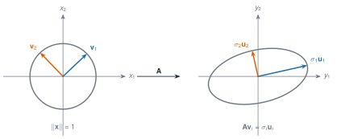
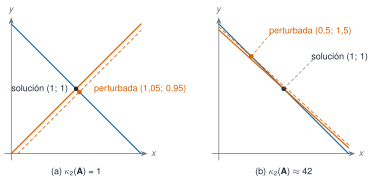
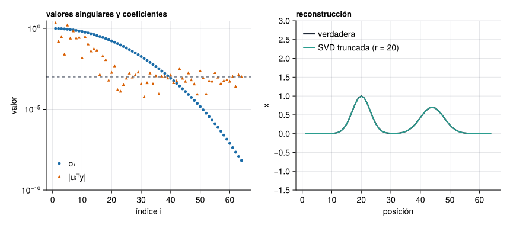

A1.1 Fundamentos de álgebra matricial
A1 · Matrices estructuradas
Stewart, G. W. 1993. «On the Early History of the Singular Value Decomposition». SIAM Review 35 (4): 551-66. https://doi.org/10.1137/1035134.
Una matriz \(\mathbf A\in\mathbb R^{m\times n}\) es la forma de escribir una aplicación lineal \(T:\mathbb R^n\to\mathbb R^m\) cuando se han elegido una base en cada espacio. El producto de matrices es la composición de aplicaciones, y por eso no es conmutativo: aplicar primero \(\mathbf B\) y después \(\mathbf A\) no es lo mismo que al revés. Si se cambia la base del espacio de partida con una matriz invertible \(\mathbf P\) (las coordenadas nuevas \(\mathbf x'\) cumplen \(\mathbf x=\mathbf P\mathbf x'\)) y la del espacio de llegada con \(\mathbf Q\), la matriz de la misma aplicación pasa a ser \(\mathbf A'=\mathbf Q^{-1}\mathbf A\mathbf P\).
Rango, núcleo e imagen. El núcleo \(\ker\mathbf A=\{\mathbf x:\mathbf A\mathbf x=\mathbf 0\}\) y la imagen \(\operatorname{im}\mathbf A\) (el espacio generado por las columnas) cumplen \(\operatorname{rango}(\mathbf A)+\dim\ker\mathbf A=n\). En una estructura, el núcleo de la matriz de rigidez son los movimientos que no deforman nada (movimientos de sólido rígido).
Adjunta. La adjunta \(\mathbf A^*\) es la que cumple \(\langle\mathbf A\mathbf x,\mathbf y\rangle=\langle\mathbf x,\mathbf A^*\mathbf y\rangle\): es la traspuesta \(\mathbf A^{\mathsf T}\) en el caso real y la traspuesta conjugada \(\mathbf A^{\mathsf H}\) en el complejo.
Ejemplo 1 Cambio de base. El vector \(\mathbf x=(3,\,1)\) en la base canónica, expresado en la base formada por \((1,1)\) y \((1,-1)\), es \(\mathbf x'=\mathbf P^{-1}\mathbf x=(2,\,1)\) con \(\mathbf P=\begin{bmatrix}1&1\\1&-1\end{bmatrix}\), porque \(2\,(1,1)+1\,(1,-1)=(3,1)\). Es el mismo vector con otras coordenadas: lo que cambia es la descripción, no la cantidad física.
Normas
Una norma \(\lVert\cdot\rVert\) mide el «tamaño» de un vector o de una matriz y cumple tres propiedades: es positiva salvo en cero, es homogénea (\(\lVert\alpha\mathbf x\rVert=\lvert\alpha\rvert\lVert\mathbf x\rVert\)) y cumple la desigualdad triangular. Para vectores, \(\lVert\mathbf x\rVert_p=(\sum\lvert x_i\rvert^p)^{1/p}\). Para matrices se usan las normas inducidas, \(\lVert\mathbf A\rVert=\max_{\mathbf x\neq\mathbf 0}\lVert\mathbf A\mathbf x\rVert/\lVert\mathbf x\rVert\), que dan la máxima amplificación que produce \(\mathbf A\):
| Norma | Fórmula | Se calcula |
|---|---|---|
| \(\lVert\mathbf A\rVert_1\) | máxima suma de columnas, \(\max_j\sum_i\lvert a_{ij}\rvert\) | directamente |
| \(\lVert\mathbf A\rVert_\infty\) | máxima suma de filas, \(\max_i\sum_j\lvert a_{ij}\rvert\) | directamente |
| \(\lVert\mathbf A\rVert_2\) | mayor valor singular \(\sigma_{\max}\) | con la SVD |
| \(\lVert\mathbf A\rVert_F\) | \(\sqrt{\sum_{ij}a_{ij}^2}=\sqrt{\sum_k\sigma_k^2}\) | directamente (no es inducida) |
Entre ellas, \(\lVert\mathbf A\rVert_2\le\lVert\mathbf A\rVert_F\le\sqrt{r}\,\lVert\mathbf A\rVert_2\), con \(r\) el rango.

La Figura 1 es la imagen que hay que retener: \(\lVert\mathbf A\rVert_2=\sigma_1\) es el semieje mayor de la elipse (lo máximo que estira \(\mathbf A\)) y \(\sigma_2\) es el menor. Si \(\sigma_2\) fuese cero, la elipse se aplastaría en un segmento y la matriz no tendría inversa.
Inversa, pseudoinversa y mínimos cuadrados
Si \(\mathbf A\) es cuadrada e invertible, \(\mathbf A\mathbf x=\mathbf b\) tiene la solución única \(\mathbf x=\mathbf A^{-1}\mathbf b\). Cuando hay más ecuaciones que incógnitas (más medidas que parámetros), lo habitual es buscar la solución de mínimos cuadrados, la que minimiza \(\lVert\mathbf A\mathbf x-\mathbf b\rVert_2\). La pseudoinversa \(\mathbf A^+=\mathbf V\boldsymbol\Sigma^+\mathbf U^{\mathsf T}\) (que se construye con la SVD, invirtiendo solo los valores singulares no nulos) da, con \(\mathbf x=\mathbf A^+\mathbf b\), la solución de mínimos cuadrados de menor norma. Las ecuaciones normales \(\mathbf A^{\mathsf T}\mathbf A\mathbf x=\mathbf A^{\mathsf T}\mathbf b\) dan la misma solución, pero elevan al cuadrado el condicionamiento, como se ve a continuación.
Condicionamiento
El número de condición de una matriz invertible es \(\kappa(\mathbf A)=\lVert\mathbf A\rVert\,\lVert\mathbf A^{-1}\rVert\). En norma 2 vale
\[ \kappa_2(\mathbf A)=\frac{\sigma_{\max}}{\sigma_{\min}} . \tag{1}\]
Teorema 1 (Sensibilidad de un sistema lineal) Sea \(\mathbf A\) invertible y sean \(\mathbf x\) y \(\mathbf x+\delta\mathbf x\) las soluciones de \(\mathbf A\mathbf x=\mathbf b\) y \(\mathbf A(\mathbf x+\delta\mathbf x)=\mathbf b+\delta\mathbf b\). Entonces \[ \frac{\lVert\delta\mathbf x\rVert}{\lVert\mathbf x\rVert}\;\le\;\kappa(\mathbf A)\,\frac{\lVert\delta\mathbf b\rVert}{\lVert\mathbf b\rVert}. \] Hay vectores \(\mathbf b\) y \(\delta\mathbf b\) para los que se da la igualdad: la cota no se puede mejorar en general.
NotaDemostración
Restando las dos ecuaciones, \(\mathbf A\,\delta\mathbf x=\delta\mathbf b\), es decir, \(\delta\mathbf x=\mathbf A^{-1}\delta\mathbf b\) y, por tanto, \(\lVert\delta\mathbf x\rVert\le\lVert\mathbf A^{-1}\rVert\lVert\delta\mathbf b\rVert\). Por otro lado, \(\mathbf b=\mathbf A\mathbf x\) da \(\lVert\mathbf b\rVert\le\lVert\mathbf A\rVert\lVert\mathbf x\rVert\), es decir, \(1/\lVert\mathbf x\rVert\le\lVert\mathbf A\rVert/\lVert\mathbf b\rVert\). Multiplicando las dos desigualdades se obtiene el resultado. La igualdad se alcanza tomando \(\mathbf b\) en la dirección del vector singular \(\mathbf u_1\) (que da la solución más pequeña, \(\lVert\mathbf x\rVert=\lVert\mathbf b\rVert/\sigma_{\max}\)) y \(\delta\mathbf b\) en la de \(\mathbf u_n\) (que da la perturbación más amplificada, \(\lVert\delta\mathbf x\rVert=\lVert\delta\mathbf b\rVert/\sigma_{\min}\)). \(\square\)
La regla práctica que de aquí sale: se pierden unas \(\log_{10}\kappa(\mathbf A)\) cifras decimales en la solución, porque los errores de redondeo en los datos y en las operaciones (del orden de \(\varepsilon\approx2{,}2\cdot10^{-16}\) en doble precisión) se amplifican hasta \(\kappa\,\varepsilon\). Y como \(\kappa_2(\mathbf A^{\mathsf T}\mathbf A)=\kappa_2(\mathbf A)^2\), resolver mínimos cuadrados con las ecuaciones normales pierde el doble de cifras que con una factorización QR o con la SVD, que es lo que hace A \ b en Julia para matrices rectangulares.

AdvertenciaEl número de condición no depende del algoritmo
\(\kappa(\mathbf A)\) es una propiedad del problema, no del método. Un buen algoritmo (por ejemplo, la eliminación con pivoteo parcial o la QR) no empeora lo que ya hay, pero tampoco lo puede arreglar: si el problema está mal condicionado, ningún método preciso va a dar una solución estable frente a perturbaciones de los datos (Golub y Van Loan 2013).
Golub, Gene H., y Charles F. Van Loan. 2013. Matrix Computations. 4.ª ed. Johns Hopkins University Press.
Ejemplo 2 Matrices de Hilbert. La matriz de Hilbert \(H_{ij}=1/(i+j-1)\) es simétrica y definida positiva, pero se condiciona muy mal. Resolviendo \(\mathbf H\mathbf x=\mathbf H\mathbf 1\) (la solución exacta es el vector de unos) se ve cómo el error crece con \(\kappa\).
Ver el código
hilbert(n) = [1 / (i + j - 1) for i in 1:n, j in 1:n]
filas = map(2:8) do n
A = hilbert(n)
x = ones(n)
err = norm(A \ (A * x) - x) / norm(x)
"| $n | $(replace(@sprintf("%.2e", cond(A)), "." => ",")) | $(replace(@sprintf("%.1e", err), "." => ",")) | $(replace(@sprintf("%.1e", cond(A) * eps()), "." => ",")) |"
end
println("| n | κ₂(H) | error relativo | κ₂·ε |\n|---|---|---|---|\n" * join(filas, "\n"))| n | κ₂(H) | error relativo | κ₂·ε |
|---|---|---|---|
| 2 | 1,93e+01 | 5,7e-16 | 4,3e-15 |
| 3 | 5,24e+02 | 8,0e-15 | 1,2e-13 |
| 4 | 1,55e+04 | 3,6e-13 | 3,4e-12 |
| 5 | 4,77e+05 | 2,1e-13 | 1,1e-10 |
| 6 | 1,50e+07 | 2,6e-10 | 3,3e-09 |
| 7 | 4,75e+08 | 7,8e-09 | 1,1e-07 |
| 8 | 1,53e+10 | 3,8e-07 | 3,4e-06 |
El error real queda por debajo de la cota \(\kappa\varepsilon\) en todos los casos (es una cota, no una predicción) y crece al mismo ritmo que \(\kappa\): para \(n=8\), \(\kappa\approx1{,}5\cdot10^{10}\) y solo quedan unas seis cifras correctas de las dieciséis.
Laboratorio: condicionamiento de un sistema \(2\times 2\)
Simulación 1. Condicionamiento. El sistema es \(\mathbf A\mathbf x=\mathbf b\) con \(\mathbf A=\begin{bmatrix}1&1\\1&1+\varepsilon\end{bmatrix}\) y \(\mathbf b=(2,\;2+\varepsilon)^{\mathsf T}\), cuya solución es siempre \((1,1)\). Modifica \(\varepsilon\) (cuanto menor, más paralelas son las rectas) y la perturbación \(\delta\) del segundo término independiente, y compara el error real con la cota del Teorema 1.
NotaHipótesis y límites de la simulación 1
Solo perturba el término independiente (no la matriz). Con \(\delta=0\) la solución exacta vuelve a ser \((1,1)\). Cuando \(\varepsilon\) es muy pequeña, la matriz está cerca de ser singular y el sistema es casi indeterminado: un cambio mínimo en \(\mathbf b\) mueve la solución por toda la recta. Con \(\delta\) pequeña, el error real queda por debajo de la cota, y llega a ella solo si la perturbación apunta en la dirección más desfavorable.
Calcula el número de condición \(\kappa_2\) de \(\mathbf A=\begin{bmatrix}1&1\\1&1{,}1\end{bmatrix}\) (se obtiene también moviendo el deslizador de la simulación 1 hasta \(\varepsilon=0{,}1\)).
Los valores singulares son \(\sigma_1\approx2{,}0512\) y \(\sigma_2\approx0{,}0487\), y \(\kappa_2=\sigma_1/\sigma_2\approx42{,}1\) (se comprueba con cond([1 1; 1 1.1]) en Julia).
Para una matriz \(\mathbf A\) de rango completo por columnas, \(\kappa_2(\mathbf A^{\mathsf T}\mathbf A)=\kappa_2(\mathbf A)^2\).
Verdadero. Los valores singulares de \(\mathbf A^{\mathsf T}\mathbf A\) son los cuadrados de los de \(\mathbf A\), así que \(\sigma_{\max}^2/\sigma_{\min}^2=\kappa_2(\mathbf A)^2\). Por eso las ecuaciones normales pierden el doble de cifras que la QR o la SVD.
Dos aplicaciones: estimar fuerzas y resolver un problema inverso
Ejemplo 3 Estimación de fuerzas a partir de desplazamientos medidos. En una cadena de \(n=10\) masas y muelles (\(m=1\), \(k=1\), en unidades normalizadas) la fuerza que hay que aplicar para producir un desplazamiento \(\mathbf u\) es \(\mathbf f=\mathbf K\mathbf u\). Si \(\mathbf u\) se mide con un ruido relativo del \(1\,\%\), ¿cuánto error se comete en la fuerza? El teorema anterior, aplicado a \(\mathbf f=\mathbf K\mathbf u\), acota la amplificación por \(\kappa(\mathbf K)\).
Ver el código
n = 10
_, Ks = cadena_masas_muelles(n)
Kd = Matrix(Ks)
E = eigen(Symmetric(Kd))
κK = cond(Kd)
u = E.vectors[:, 1] # desplazamiento = primer modo (norma 1)
f = Kd * u
ε = 0.01
relerr(δ) = norm(Kd * (u + δ) - f) / norm(f)
rng = Xoshiro(2026)
ruido = [(v = randn(rng, n); ε * v / norm(v)) for _ in 1:2000] # 2000 ruidos aleatorios de norma ε
amp_alea = [relerr(δ) / ε for δ in ruido]
amp_peor = relerr(ε * E.vectors[:, end]) / ε # ruido en la dirección del modo más alto
nothingLa cota es \(\kappa(\mathbf K)=\) 175. Con un ruido aleatorio, el error en la fuerza se amplifica de media 103 veces (máximo de los 2000 ensayos: 162); con el ruido en la dirección del modo más alto, 175 veces: se alcanza justo la cota. Es lo que ocurre al derivar una señal medida: los componentes de alta frecuencia del ruido pesan mucho más en las fuerzas que en los desplazamientos, mientras la señal útil (aquí, el primer modo) casi no genera fuerzas.
Ejemplo 4 Un problema inverso: deshacer un suavizado. Una señal \(\mathbf x\) se mide a través de un instrumento que la suaviza con un núcleo gaussiano: \(\mathbf y=\mathbf H\mathbf x+\text{ruido}\), con \(\mathbf H\) una matriz de Toeplitz simétrica (\(H_{ij}=h_{|i-j|}\), con \(h_k\propto e^{-k^2/8}\)). Recuperar \(\mathbf x\) exige invertir \(\mathbf H\), que está extremadamente mal condicionada.
Ver el código
n = 64
σb = 2.0
h = [exp(-0.5 * (k / σb)^2) for k in 0:n-1]
h ./= (h[1] + 2 * sum(h[2:end])) # núcleo normalizado
H = toeplitz(h)
bump(c, w) = [exp(-0.5 * ((i - c) / w)^2) for i in 1:n]
xverd = bump(20, 3.0) .+ 0.7 .* bump(44, 4.0)
σn = 1e-3
y = H * xverd + σn * randn(Xoshiro(7), n)
F = svd(H)
x_ingenuo = H \ y
coef = F.U' * y # coeficientes de y en la base U
r_picard = findlast(i -> abs(coef[i]) > 3 * σn, 1:n)
errores_r = map(1:30) do r
xr = F.V[:, 1:r] * (coef[1:r] ./ F.S[1:r])
norm(xr - xverd) / norm(xverd)
end
r_opt = argmin(errores_r)
x_tsvd = F.V[:, 1:r_opt] * (coef[1:r_opt] ./ F.S[1:r_opt])
nothingVer el código
fig = Figure(size=(860, 380))
ax1 = Axis(fig[1, 1]; yscale=log10, xlabel="índice i", ylabel="valor", title="valores singulares y coeficientes", titlealign=:left, titlesize=13)
scatter!(ax1, 1:n, F.S; color=AZUL, label="σᵢ", markersize=7)
scatter!(ax1, 1:n, abs.(coef) .+ 1e-16; color=NARANJA, label="|uᵢᵀy|", markersize=7, marker=:utriangle)
hlines!(ax1, [σn]; color=GRIS, linestyle=:dash)
ylims!(ax1, 1e-10, 3)
axislegend(ax1; position=:lb, framevisible=false)
ax2 = Axis(fig[1, 2]; xlabel="posición", ylabel="x", title="reconstrucción", titlealign=:left, titlesize=13)
lines!(ax2, 1:n, xverd; color=TINTA, linewidth=2.2, label="verdadera")
lines!(ax2, 1:n, x_tsvd; color=VERDE, linewidth=2, label="SVD truncada (r = $r_opt)")
ylims!(ax2, -1.5, 3)
axislegend(ax2; position=:lt, framevisible=false)
fig
La inversión directa da un error relativo de 61118 (¡5 órdenes de magnitud por encima de la señal!), porque divide por valores singulares de hasta 7e-09 los coeficientes de ruido. Truncar la SVD en \(r=\) 20 componentes (aquí se elige el \(r\) que minimiza el error, conociendo la solución verdadera; en la práctica se usa el punto donde los coeficientes llegan al nivel de ruido, que da \(r\approx\) 43) deja un error relativo de 0,7 %. Esto es regularizar: se renuncia a las componentes que el ruido domina.
AdvertenciaLo que no se puede recuperar
Si la señal verdadera tuviese picos finos (por ejemplo, impulsos de una muestra de ancho), la regularización no los recuperaría: la información sobre ellos está en las componentes de valor singular muy pequeño, que el ruido ha borrado. El suavizado es una pérdida de información que ninguna matemática repone.
Una colega propone estimar las cargas que actúan sobre un puente invirtiendo directamente la matriz que relaciona cargas y desplazamientos medidos. Explica en tres frases qué comprobarías antes de fiarte del resultado.
- Calculo el número de condición de la matriz y estimo cuántas cifras se pierden.
- Compruebo el efecto del ruido de medida: lo simulo y miro cuánto se amplifica en las cargas.
- Menciono la regularización (SVD truncada o similar) como forma de limitar la amplificación, y que descarta información.
Calcularía \(\kappa_2\) y los valores singulares de la matriz; simularía desplazamientos con ruido del tamaño real de los sensores y vería la dispersión de las cargas estimadas; y, si la amplificación es grande, truncaría la SVD en el rango donde los coeficientes de los datos superan el nivel de ruido, aceptando que las cargas de variación rápida no se podrán estimar.
Referencias
Son las mismas que aparecen en el margen, junto al texto. La lista completa del curso, con el estado de verificación de cada ficha, está en recursos/bibliografia.bib del repositorio.
Golub, Gene H., y Charles F. Van Loan. 2013. Matrix Computations. 4.ª ed. Johns Hopkins University Press.
Stewart, G. W. 1993. «On the Early History of the Singular Value Decomposition». SIAM Review 35 (4): 551-66. https://doi.org/10.1137/1035134.